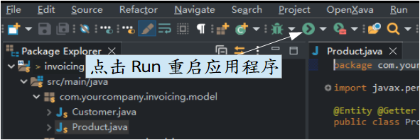
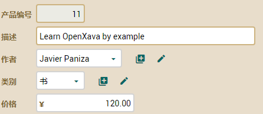
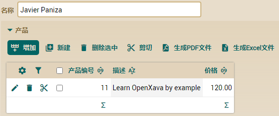

I如果您不熟悉敏捷开发，您可以查看
agilemanifesto.org。基本上，敏捷开发鼓励使用来自产品的反馈，而不是前期设计的多仔细。这突出了程序员和用户（使用者）的角色，并降低了分析师和软件架构师的重要性。
这类型的开发也需要新型的工具。因为您需要快速开发出能运行的应用程序。开发初始应用程序的速度必须与写描述功能的速度一样快。此外，您需要快速响应用户反 馈。用户需要看到他的提案在短时间内运行。
OpenXava 非常适合敏捷开发，因为它不仅允许非常快速的初始开发，而是还允许您进行更改并立即查看效果。让我们看一个例子。
例如，一旦有用户开始使用您的应用程序，他会发现他的产品都有书籍、音乐、软件等。这些产品都有“作者”，存储作者并按作者查看产品会是一个很有用的功能。
将此新功能添加到您的应用程序又快又简单。首先，创建一个新类，名为 Author：
package com.yourcompany.invoicing.model;
import javax.persistence.*;
import org.hibernate.annotations.GenericGenerator;
import org.openxava.annotations.*;
import lombok.*;
@Entity @Getter @Setter
public class Author {
@Id @GeneratedValue(generator="system-uuid") @Hidden
@GenericGenerator(name="system-uuid", strategy = "uuid")
@Column(length=32)
String oid;
@Column(length=50) @Required
String name;
}
现在，将以下代码添加到现有的 Product 实体中：
@ManyToOne(fetch=FetchType.LAZY)
@DescriptionsList
Author author;
因此，您的 Product 实体具有对 Author 的参照。
您还真的编写了很少代码。为了查看效果，请点击 Run 按钮重新启动您的应用程序

然后转到浏览器并使用 Product 模块重新加载页面，您将在那里看到用于选择产品作者的组合，就像这样：

如果用户想选择一个作者并查看他所有的产品呢？很简单，您只需要将 Product 和 Author 之间的关联设为双向。请至 Author 类并添加以下代码：
@OneToMany(mappedBy="author")
@ListProperties("number, description, price")
Collection<Product> products;
现在，重新启动您的应用程序并使用 Author 模块。选择一位作者后，您将看到他的产品，您应该看到此画面：

是的，您添加一个新的集合，重新启动应用程序，刷新网页，然后您就获得完 整的用户界面来管理它。在这种情况下，用户可以点击“添加”按钮从现有书籍的列表中选择一本书，或者点击“新建”以创建和添加新书籍到集合中。此外，当作者有 与其关联的书籍时，无法被删除。您可以用 Cascade 定义不同的行为，如 REMOVE 或 ALL，如下：
@OneToMany(mappedBy="author", cascade=CascadeType.REMOVE) // 请勿添加此代码
这样子，只有用于创建新书的“新建”按钮可使用，“添加”按钮并不存在。此外，当作者被删除时，他的书也将被删除。对于作者/书籍的类联情况，我们不希望有这种行为，但在 @ElementCollection 不够用的情况下，它也是个选择。
总结
在本章节，您看到了如何进行更改所需的完整代码和步骤，您亲眼看到 OpenXava 是个非常适合敏捷开发的工具。您已经了解为何 OpenXava 是个非常适合敏捷开发的工具。
是的！您毫不费力地拥有一个可运行的应用程序。尽管此应用程序“按现在的样子”可用作 CRUD 实用程序或原型，但您仍需要添加验证器、业务逻辑、用户界面行为等，以便将您编写的这些实体转换为业务应用程序，以供用户使用。
您将在接下来的课程中学习这些进阶主题。
下载本课源代码
对这节课有什么问题吗？ 前往轮譠 一切都顺利吗？ 前往第六章